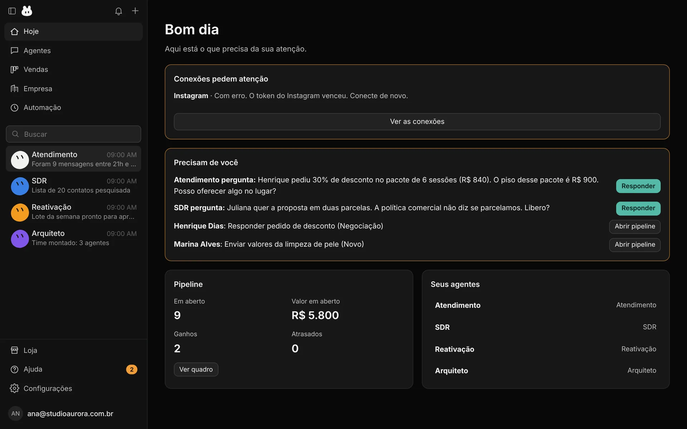

22 cargos · atendimento, prospecção, conteúdo, site e gestão
Não é um chatbot. É o comercial inteiro da sua empresa.
O Bunny instala uma operação comercial no seu computador: atende quem chega em segundos, prospecta dentro da lei, organiza o funil, escreve o conteúdo, cuida do site e mostra em dinheiro o que fez. Preço, desconto e exceção continuam sendo seus.
Em português · Para qualquer tipo de empresa · Funciona sozinho; Chatwoot e fazer.ai são opcionais · Sem cobrança por enquanto
✓23h12 · mensagem respondida em 2 min
!Precisa de você · desconto abaixo do piso
◆R$ 5.800 · em aberto no funil
Bunny · Hoje

Telas com dados de exemplo, de uma empresa fictícia.
Responde na hora ✦ Preço com regra ✦ Funil e registro ✦ Prospecção com ficha de canal ✦ Conteúdo e site ✦ Base de conhecimento ✦ Relatório em dinheiro ✦
Responde na hora ✦ Preço com regra ✦ Funil e registro ✦ Prospecção com ficha de canal ✦ Conteúdo e site ✦ Base de conhecimento ✦ Relatório em dinheiro ✦
Dúvidas
Perguntas comuns.
Preciso do Chatwoot ou do fazer.ai?
Não. O Bunny cria sozinho o funil, os agentes e as rotinas, e responde por conta própria. Se você já atende por Chatwoot ou fazer.ai, ele conecta, lê o que já existe — inclusive as etiquetas, com os nomes de lá — e acrescenta o resto. Quem não tem nada começa do zero, sem montar infraestrutura.
O agente age sozinho?
Você decide, canal por canal: só avisar, só rascunhar (o padrão de fábrica) ou responder. Mesmo respondendo, preço abaixo do piso, desconto e o que não está na base viram pergunta para você, com a sugestão pronta.
E se eu não sei como organizar meu comercial?
É o caso mais comum. O Arquiteto pergunta sobre a economia do negócio — margem, quanto vale um cliente, quem decide, de onde vieram os últimos clientes — busca o que dá para descobrir sozinho e mostra o porquê de cada peça que sugere. Tom de voz e preço ele nunca decide por você.
Ele prospecta cliente novo? É legal?
Prospecta, com regras de fábrica: identifica a empresa, oferece saída em toda mensagem fria, para de vez quando alguém pede, não usa lista comprada e segue LGPD e GDPR. Grupo e canal frio só com a ficha do canal levantada antes. Onde a regra não é clara, ele não manda e diz por quê.
Funciona com WhatsApp?
Sim, pela API oficial da Meta ou pelo Chatwoot que você já usa. Pela Meta, o seu número e o seu app precisam estar aprovados por ela. O Bunny não vende nem revende número: ele orienta você a ter o seu, no seu nome.
Ele mexe no meu site sem avisar?
Não. O módulo de site audita, propõe e gera, mas publicar e apontar domínio passa por você, com portões de qualidade antes. Domínio quem compra é você.
Preciso saber de IA para usar?
Não. A configuração é uma conversa em português e tudo que o agente propõe vem com o motivo. Você precisa saber do seu negócio; o resto é com ele.
Preciso de conta do Claude ou do Codex?
Sim: o raciocínio dos agentes roda na sua conta do Claude Code ou do Codex — a que você já usa. O Bunny detecta a instalação, mostra o comando se faltar e testa para você. A conta continua sendo sua, e nenhuma credencial é copiada.
Preciso deixar o computador ligado?
Para o que acontece sozinho, sim: rotinas, campanhas de e-mail e o recebimento de mensagens do WhatsApp dependem do app aberto na sua máquina. É o preço de os seus dados não ficarem na nuvem de ninguém.
Quanto custa?
Por enquanto o Bunny está sem cobrança, com uso livre. Quando a cobrança começar, avisamos antes.
Funciona em qual sistema?
Hoje em Windows, com instalador de um clique e atualização pelo próprio app. A interface é toda em português.